Partie I - Accessibilité numérique et cadre légal
Présentation - Partie I - Accessibilité numérique et cadre légal
Slide 1 sur 39 - Partie I - Accessibilité et cadre légal
Slide 1 - Partie I - Accessibilité et cadre légal
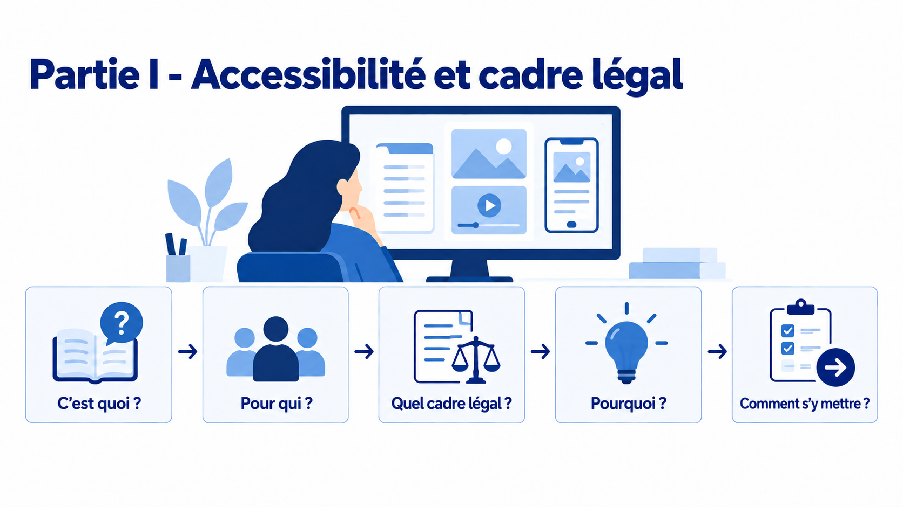
Partie I - Accessibilité et cadre légal
Partie I | Plan
- L'accessibilité numérique, c'est quoi ?
- L'accessibilité numérique, c'est pour qui ?
- L'accessibilité numérique, quel cadre légal ?
- L'accessibilité numérique, pourquoi ?
- L'accessibilité numérique, comment s'y mettre ?
Annoncer les cinq questions qui structurent la partie I. Préciser que la progression va de la définition aux premiers gestes concrets.
Slide 2 - 1. L'accessibilité numérique, c'est quoi ?
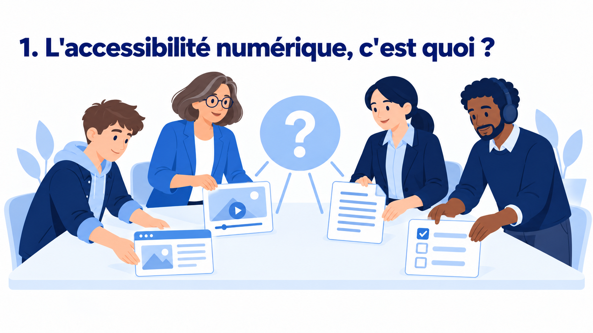
1. L'accessibilité numérique, c'est quoi ?
Ouverture du module 1. Poser la question : si je vous dis accessibilité numérique, à quoi pensez-vous ? Laisser 30 secondes de silence avant de basculer vers la définition.
Slide 3 - L'accessibilité numérique, c'est quoi ?
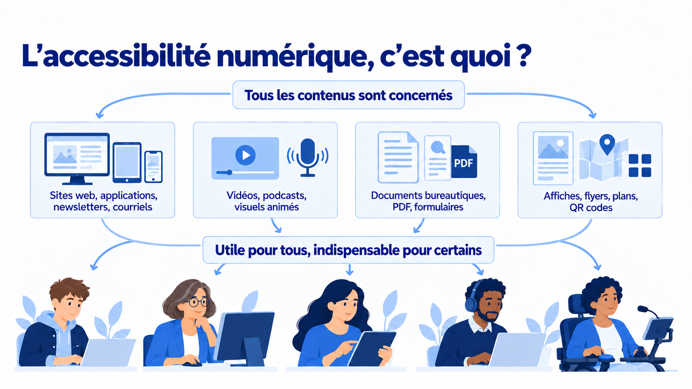
L'accessibilité numérique, c'est quoi ?
1. Q1 - C'est quoi | Définition
Rendre possible l'accès à l'information et aux fonctionnalités numériques aux personnes en situation de handicap, quels que soient leur matériel, leur logiciel ou leur situation.
Tous les contenus sont concernés
- Sites web, applications, newsletters, courriels
- Vidéos, podcasts, visuels animés
- Documents bureautiques, PDF, formulaires
- Affiches, flyers, plans, QR codes
Utile pour tous, indispensable pour certains
- Handicap permanent, temporaire ou situationnel
- Matériel ancien, connexion lente, écran petit
- Environnement bruyant, lumineux ou contraint
- Langue étrangère, faible littératie numérique
Poser la définition avant tout. Insister sur le fait que l'accessibilité ne concerne pas que le web ni que le handicap lourd. Faire reformuler par le groupe : quels supports produisez-vous au quotidien ?
Slide 4 - Point sur l'accessibilité numérique
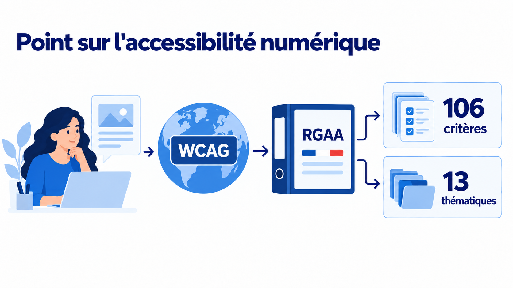
Point sur l'accessibilité numérique
1. Q1 - C'est quoi | WCAG et RGAA
L'accessibilité numérique permet d'accéder à l'information quel que soit le support, l'outil ou la situation.
- WCAG
- RGAA
- 106 / 13
WCAG : référence internationale du W3C. RGAA : référentiel français publié par la DINUM. 106 critères regroupés en 13 thématiques.
Cette slide fait la transition entre l'approche communication et le cadre de conformité. Ne pas détailler les 106 critères maintenant : expliquer que la formation donnera des clés utilisables, puis les points de contrôle rapides permettront de repérer les problèmes les plus fréquents.
Slide 5 - 4 principes pour tout retenir
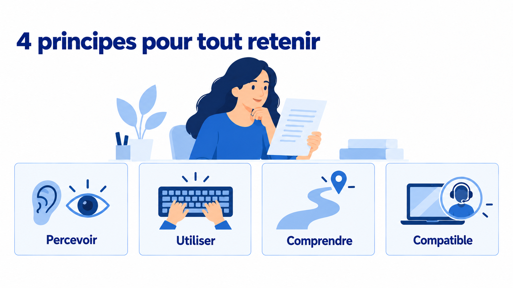
4 principes pour tout retenir
1. Q1 - C'est quoi | 4 principes WCAG
Les WCAG reposent sur 4 principes. Chacun se résume en une question à poser devant tout contenu.
- Percevoir - L'information reste-t-elle disponible si je ne vois pas ou n'entends pas ?
- Utiliser - Puis-je naviguer et agir sans souris, sans geste imposé ?
- Comprendre - Les mots, formulaires et comportements sont-ils prévisibles ?
- Compatible - Les aides techniques peuvent-elles interpréter l'interface ?
Mnémonique : PUCC (Percevoir, Utiliser, Comprendre, Compatible). Faire reformuler par le groupe : 'Si je suis aveugle, quel principe est en jeu ?' (Percevoir). 'Si je ne peux pas utiliser la souris ?' (Utiliser). Ces 4 principes structurent le RGAA et reviendront dans les modules suivants.
Slide 6 - 2. L'accessibilité numérique, c'est pour qui ?
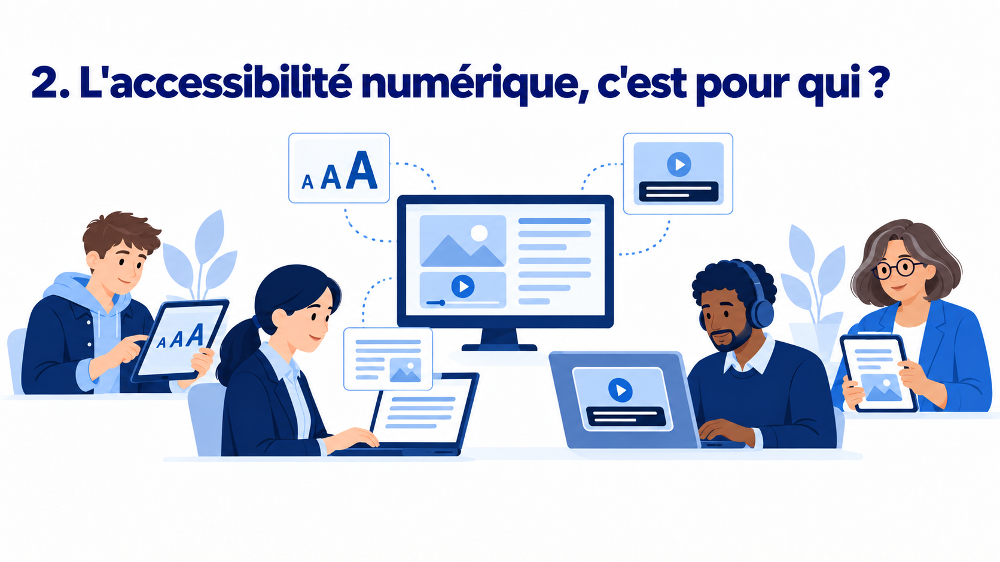
2. L'accessibilité numérique, c'est pour qui ?
Transition vers les publics concernés. Avant de montrer les 4 familles, demander au groupe : à votre avis, combien de personnes sont concernées par l'accessibilité numérique en France ?
Slide 7 - C'est pour qui ? 4 familles de besoins
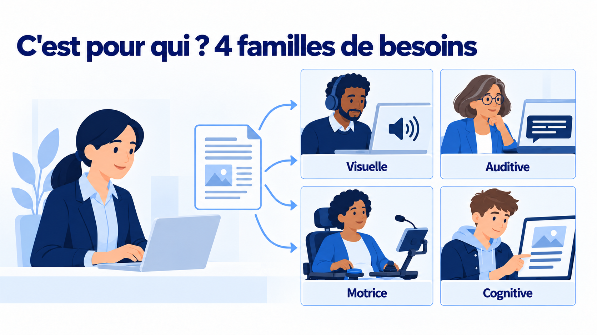
C'est pour qui ? 4 familles de besoins
1. Q2 - Pour qui | 4 familles
Chaque type de handicap implique des besoins concrets que vos contenus doivent prendre en compte.
Visuelle
- Lecteur d'écran, loupe, contraste
- Alt text, structure, couleurs
Auditive
- Sous-titres, transcription, LSF
- Alertes visuelles, pas que sonores
Motrice
- Clavier seul, contacteur, voix
- Cibles larges, pas de geste imposé
Cognitive
- Langage clair, mise en page aérée
- Navigation prévisible, pas de surcharge
Ne pas détailler chaque handicap - l'objectif est de montrer la diversité des besoins. Faire le lien avec les gestes concrets vus dans les modules suivants : alt text (visuelle), sous-titres (auditive), clavier (motrice), langage clair (cognitive).
Slide 8 - Comprendre pour mieux agir
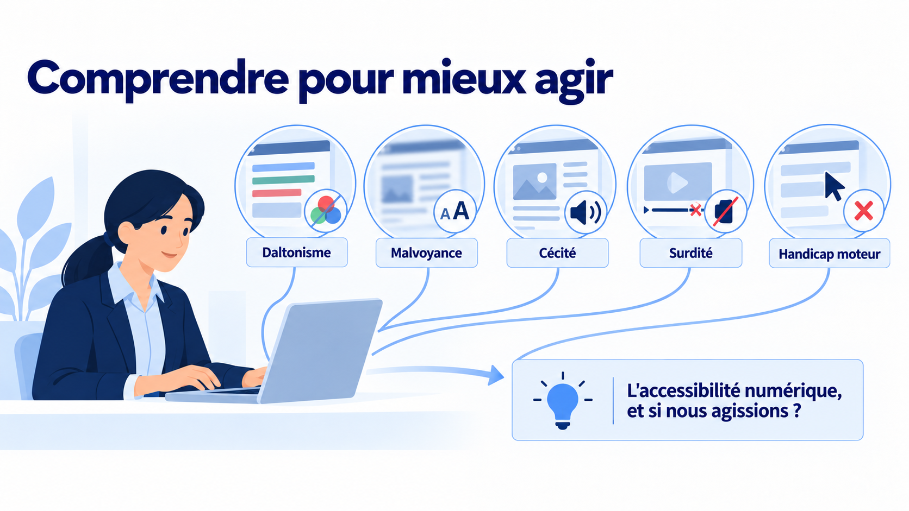
Comprendre pour mieux agir
1. Q2 - Pour qui | Comprendre
Il ne s’agit pas de se mettre à la place d’une personne handicapée, mais d’observer ce que nos choix numériques peuvent faciliter ou bloquer.
Testez les simulations suivantes
- Daltonisme
- Malvoyance
- Cécité
- Surdité
- Handicap moteur
Daltonisme : environ 8 % des hommes et 0,4 % des femmes. Laisser les stagiaires naviguer librement sur le site Atalan pendant 5 minutes. Chaque simulation illustre un type de handicap et montre ce que nos choix de mise en forme peuvent faciliter ou bloquer.
Slide 9 - Amir, chargé d'études - cécité
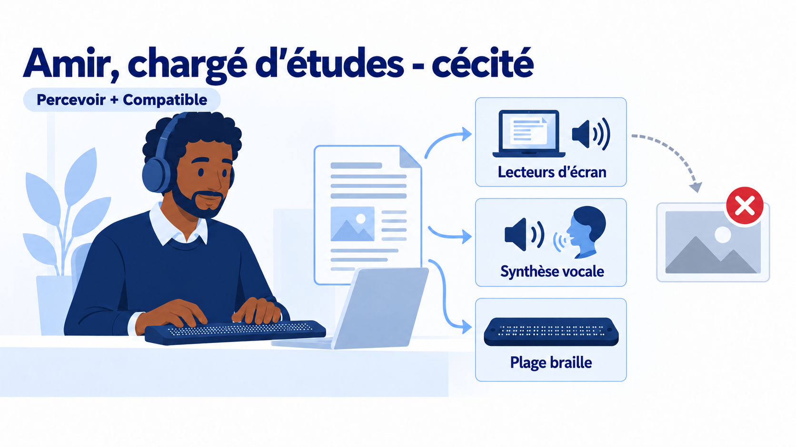
Amir, chargé d'études - cécité
1. Q2 - Pour qui | Amir
Ses besoins au quotidien
- Alternative textuelle sur chaque image (attribut alt)
- Structure logique du document (titres, listes, tableaux)
- Liens explicites (pas de « cliquez ici »)
- Formulaires avec des étiquettes associées aux champs
Percevoir + Compatible
- Lecteurs d'écran
- Plage braille
- Synthèse vocale
Amir est aveugle de naissance et utilise un lecteur d'écran (NVDA ou JAWS) pour tout son travail. Ce profil est central pour les communicants : chaque image sans alt, chaque tableau sans structure, chaque lien « cliquez ici » est un mur pour lui. Faire la demo du lecteur d'écran sur un document mal structure vs bien structure pour marquer les esprits.
Slide 10 - Anaïs, gestionnaire RH - malvoyance
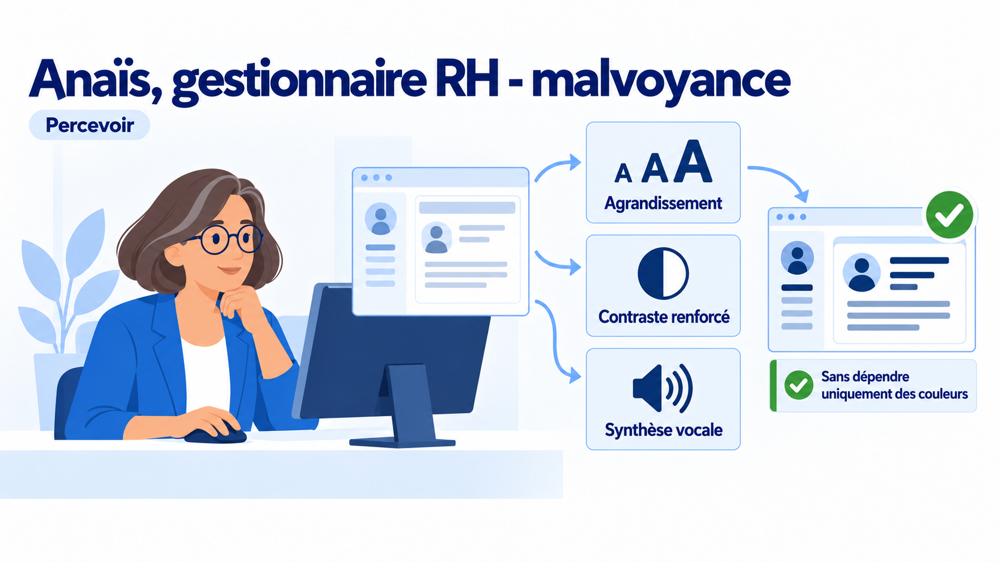
Anaïs, gestionnaire RH - malvoyance
1. Q2 - Pour qui | Anaïs
Ses besoins au quotidien
- Agrandir la taille des textes et des interfaces
- Contraste suffisant entre texte et fond (ratio 4.5:1 minimum)
- Pouvoir naviguer sans dépendre uniquement des couleurs
Percevoir
- Agrandissement
- Contraste renforcé
- Synthèse vocale
Anaïs a une DMLA précoce diagnostiquée il y a 10 ans. Ce profil illustre la déficience visuelle. Insister sur le fait que le contraste et la taille de texte sont des leviers que le communicant maîtrise directement dans ses documents.
Slide 11 - Justine, chargée de communication - surdité
Justine, chargée de communication - surdité
1. Q2 - Pour qui | Justine
Ses besoins au quotidien
- Sous-titres sur toutes les vidéos et contenus audio
- Transcription textuelle des podcasts et webinaires
- Alertes visuelles, jamais uniquement sonores
Percevoir
- Sous-titres relus
- Transcription
- Alertes visuelles
Justine est sourde de naissance. Ce profil illustre la déficience auditive. Le message clé pour les communicants : tout contenu audio doit avoir un équivalent textuel. Les sous-titres automatiques ne suffisent pas toujours, une relecture humaine est nécessaire.
Slide 12 - Agathe, chargée de mission - déficience motrice
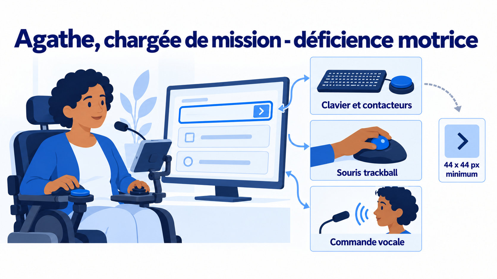
Agathe, chargée de mission - déficience motrice
1. Q2 - Pour qui | Agathe
Ses besoins au quotidien
- Naviguer sans souris, avec des contacteurs adaptés
- Cibles cliquables suffisamment larges (44 x 44 px minimum)
- Commande vocale pour piloter l'interface
Utiliser
- Clavier et contacteurs
- Souris trackball
- Commande vocale
Agathe utilise un fauteuil roulant et des contacteurs adaptés. Ce profil illustre la déficience motrice. Pour les communicants : penser aux zones cliquables suffisamment grandes dans les PDF et formulaires, et à la navigation au clavier.
Slide 13 - Anatole, lycéen - handicap cognitif
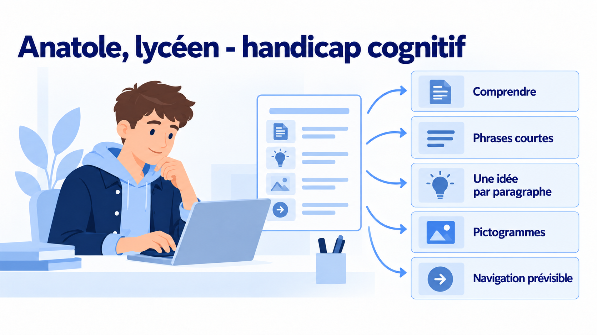
Anatole, lycéen - handicap cognitif
1. Q2 - Pour qui | Anatole
Ses besoins au quotidien
- Phrases courtes et simples, sans double négation
- Mise en page aérée, une idee par paragraphe
- Pictogrammes pour accompagner le texte
- Navigation prévisible, sans changements inattendus
Comprendre
Profil
- Porteur de trisomie 21
- Lire lui demande du temps et de la concentration
- Il comprend mieux les phrases simples et courtes
- Le langage clair et le FALC lui sont indispensables
Anatole illustre la déficience cognitive. Pour les communicants : les règles du FALC et du langage clair ne profitent pas qu'aux personnes handicapees mentales - elles aident aussi les personnes agees, fatiguees, en situation de stress ou dont le français n'est pas la langue maternelle. Faire le lien avec les slides FALC.
Slide 14 - Paul, attaché de presse - TDAH et dyslexie
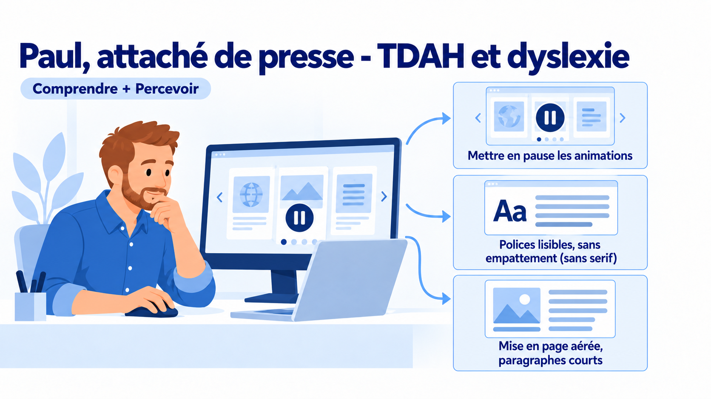
Paul, attaché de presse - TDAH et dyslexie
1. Q2 - Pour qui | Paul
Ses besoins au quotidien
- Mettre en pause les animations (carrousels, vidéo autoplay)
- Textes non justifies, avec un espacement suffisant
- Polices lisibles, sans empattement (sans serif)
- Mise en page aérée, paragraphes courts
Comprendre + Percevoir
Profil
- Consulte quotidiennement des sites d'info pour ses revues de presse
- Trouble de l'attention : les animations non contrôlables le déconcentrent
- Dyslexie : le texte justifié et les polices a empattement ralentissent sa lecture
Paul illustre les troubles dys et le TDAH. Pour les communicants : ne jamais justifier le texte dans un document Word ou PDF, privilegier les polices sans serif (Marianne, Arial), éviter les carrousels en lecture automatique sans bouton pause, et garder des paragraphes courts. Ces règles beneficient a tous les lecteurs.
Slide 15 - 6 profils, 4 questions - votre boussole WCAG
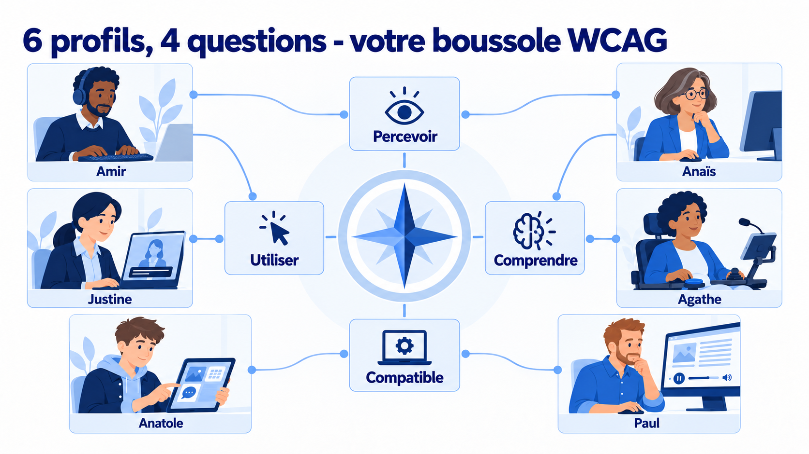
6 profils, 4 questions - votre boussole WCAG
1. Q2 - Pour qui | Synthèse
| Persona | Percevoir | Utiliser | Comprendre | Compatible |
|---|---|---|---|---|
| Amir (aveugle) | Alt text, structure | Lecteur d'écran | ||
| Anaïs (malvoyante) | Contrastes, taille | |||
| Justine (sourde) | Sous-titres, transcription | |||
| Agathe (motrice) | Clavier, cibles 44px | |||
| Anatole (cognitif) | FALC, phrases courtes | |||
| Paul (TDAH, dyslexie) | Polices lisibles | Pas de justification |
Slide de synthèse qui fait le lien entre les personas et les 4 principes WCAG. Distribuer la fiche stagiaire (fiche-stagiaire-principes-wcag.pdf) à ce moment-là. Dire : « Vous n'avez pas besoin de retenir tout WCAG. Gardez les 4 questions sous la main. À chaque anomalie Word ou web, demandez-vous : est-ce un problème pour percevoir, utiliser, comprendre ou être lu par les outils ? »
Slide 16 - Solutions par type de déficience (1/2)
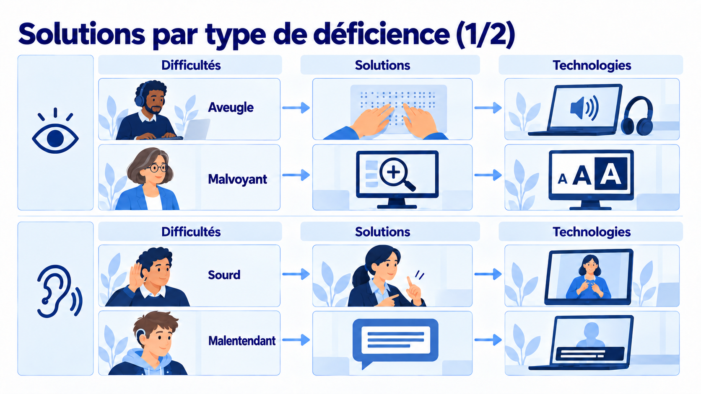
Solutions par type de déficience (1/2)
1. Q2 - Pour qui | Fiches solutions
Chaque déficience appelle des solutions et des technologies d'assistance spécifiques.
| Aveugle | Malvoyant | |
|---|---|---|
| Difficultés | Inaccessibilité au visuel | Inaccessibilité partielle |
| Solutions | Remplacer par audio et tactile | Grossissement, contrastes, luminosité |
| Technologies | Plage braille, synthèse vocale | Loupe logicielle, synthèse vocale |
| Sourd | Malentendant | |
|---|---|---|
| Difficultés | Inaccessibilité à l'audio | Inaccessibilité partielle à l'audio |
| Solutions | Remplacer par le visuel (sous-titres, LSF) | Renforcement du signal auditif, visuel |
| Technologies | Sous-titrage, velotypie, LSF | Appareil auditif, boucle magnétique |
Faire le lien avec les personas vus juste avant : Amir = aveugle, Anais = malvoyante, Justine = sourde. Ce tableau récapitule les solutions de manière structurée. La plage braille et la loupe logicielle sont des technologies d'assistance qu'on peut montrer en photo ou en vidéo courte si le temps le permet.
Slide 17 - Solutions par type de déficience (2/2)
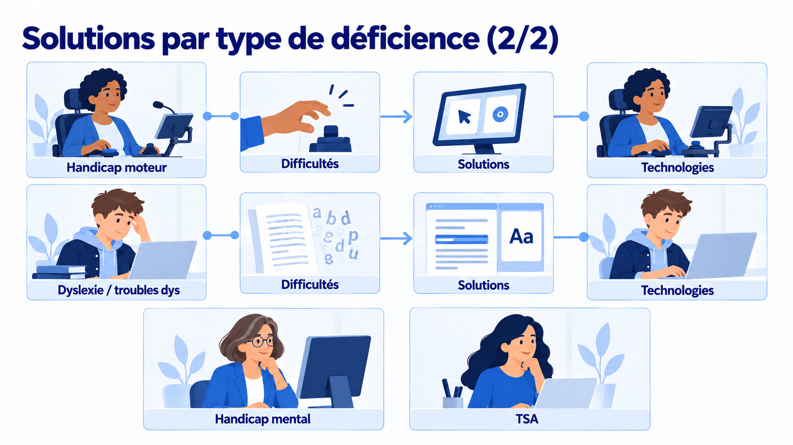
Solutions par type de déficience (2/2)
1. Q2 - Pour qui | Fiches solutions
Les déficiences motrices et cognitives impliquent des réponses différentes, mais un principe commun : simplifier l'interaction.
| Handicap moteur | Dyslexie / troubles dys | |
|---|---|---|
| Difficultés | Manipulation, préhension, pointage | Lecture, repérage, décodage |
| Solutions | Navigation clavier, zones cliquables larges | Polices simples, texte non justifié, mise en page aérée |
| Technologies | Trackball, clavier virtuel, commande oculaire | Synthèse vocale, règle de lecture |
| Handicap mental | TSA | |
|---|---|---|
| Difficultés | Compréhension, défilement, animation | Structuration, repérage |
| Solutions | Interfaces simples, FALC, pictogrammes | Consignes claires, structure documentaire |
| Technologies | Pas de technologie d'assistance spécifique | Pas de technologie d'assistance spécifique |
Faire le lien avec Agathe (motrice), Paul (dyslexie/TDAH) et Anatole (cognitif). Pour le handicap mental et le TSA, insister sur le fait qu'il n'existe pas de technologie d'assistance spécifique : c'est le contenu et l'interface qui doivent s'adapter. Le FALC et le langage clair sont les réponses principales.
Slide 18 - Handicap : sortir de l'angle mort
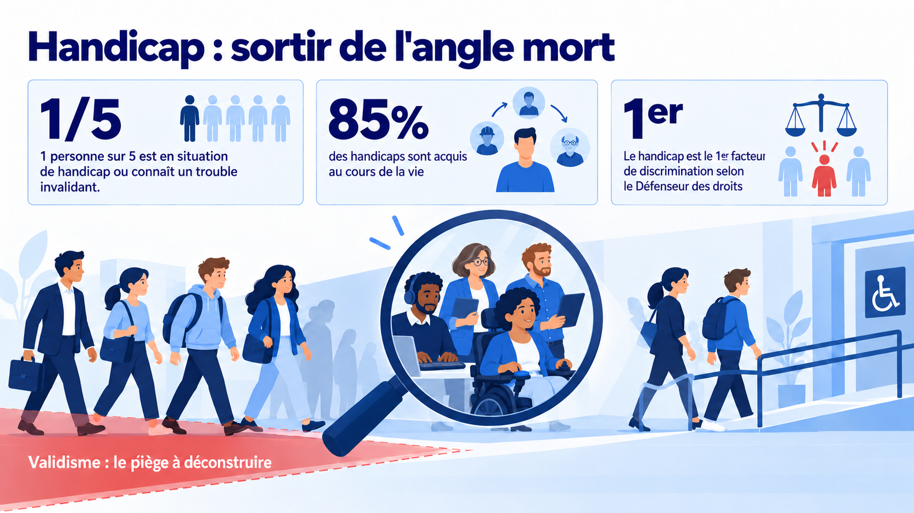
Handicap : sortir de l'angle mort
1. Q2 - Pour qui | Chiffres
L'accessibilité n'est pas une faveur : c'est une condition d'accès équitable à l'information.
- 1/5 - 1 personne sur 5 est en situation de handicap ou connaît un trouble invalidant.
- 85% - des handicaps sont acquis au cours de la vie
- 1er - Le handicap est le 1er facteur de discrimination selon le Défenseur des droits
Validisme : le piège à déconstruire
- Penser le public comme valide par défaut
- Confondre bonne intention et accès réel
- Oublier les handicaps invisibles, acquis ou temporaires
Les chiffres viennent du guide Accessibiliser sa communication. Ne pas transformer cette slide en cours théorique sur le validisme. Objectif : faire comprendre que l'accessibilité de la communication répond à des situations nombreuses, souvent invisibles, et qu'une bonne intention ne garantit pas l'accès effectif.
Slide 19 - Déficience n'est pas situation de handicap
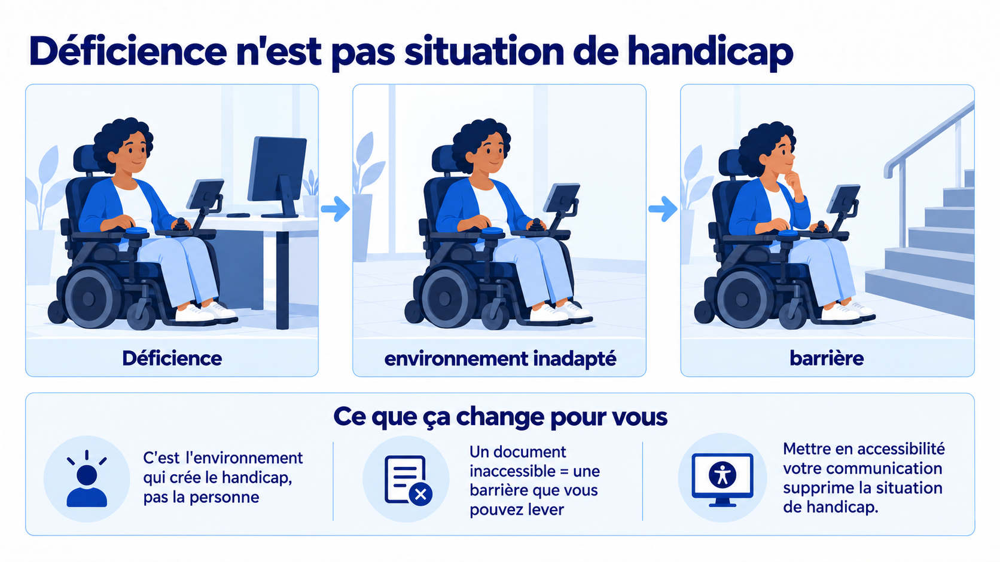
Déficience n'est pas situation de handicap
1. Q2 - Pour qui | Déficience vs situation
Le handicap n'est pas un état fixe : c'est la rencontre entre une déficience et un environnement inadapté.
Texte dans l’illustration : « Déficience ≠ situation de handicap » ; « situation » ; « Etat » ; « situation ».
Ce que ça change pour vous
- C'est l'environnement qui crée le handicap, pas la personne
- Un document inaccessible = une barrière que vous pouvez lever
- Mettre en accessibilité votre communication supprime la situation de handicap
Le schéma illustre le modèle social du handicap, opposé au modèle médical. La personne en fauteuil n'est pas en situation de handicap devant un bureau adapté, mais le devient face à un escalier. Transposer au numérique : un PDF non structuré = un escalier pour un lecteur d'écran.
Slide 20 - Le spectre du handicap
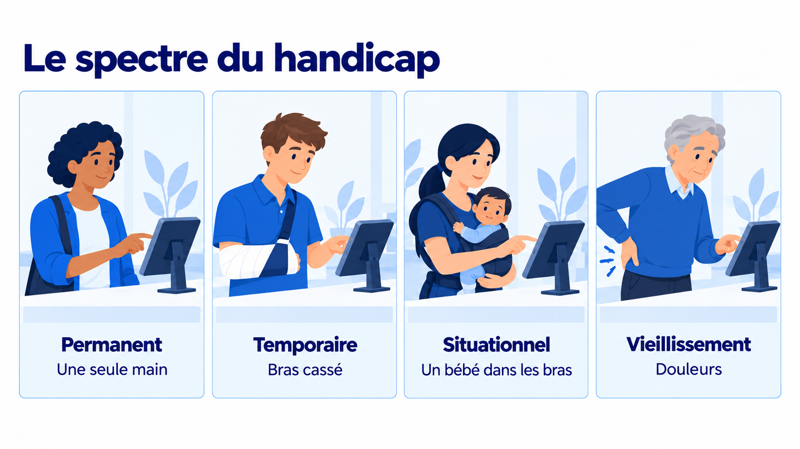
Le spectre du handicap
1. Q2 - Pour qui | Spectre du handicap
Le handicap n'est pas binaire. Il peut être permanent, temporaire, situationnel ou lié au vieillissement.
| Handicap | Permanent | Temporaire | Situationnel | Vieillissement |
|---|---|---|---|---|
| Manipulation | Une seule main | Bras cassé | Un bébé dans les bras | Douleurs |
| Vision | Visibilité faible | Oeil gonflé | Lumière tamisée | Vue qui baisse |
| Cognition | Amnésie | Fatigue | Première utilisation | Alzheimer |
| Mobilité | Fauteuil roulant | Jambe cassée | Chaussures inconfortables | Canne |
Laisser les stagiaires découvrir le tableau. Demander : dans quelle colonne vous êtes-vous déjà retrouvés ? Tout le monde a déjà été en situation de handicap temporaire ou situationnel. C'est là que le déclic se produit : l'accessibilité concerne tout le monde.
Slide 21 - 3. L'accessibilité numérique, quel cadre légal ?
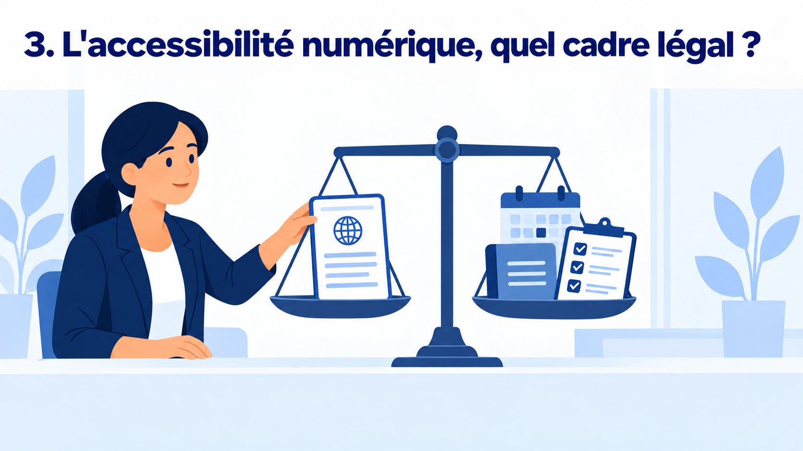
3. L'accessibilité numérique, quel cadre légal ?
Transition vers le cadre juridique. Rappeler que l'accessibilité n'est pas seulement une bonne pratique, c'est une obligation légale avec des sanctions.
Slide 22 - Le cadre légal : de 2005 à aujourd'hui
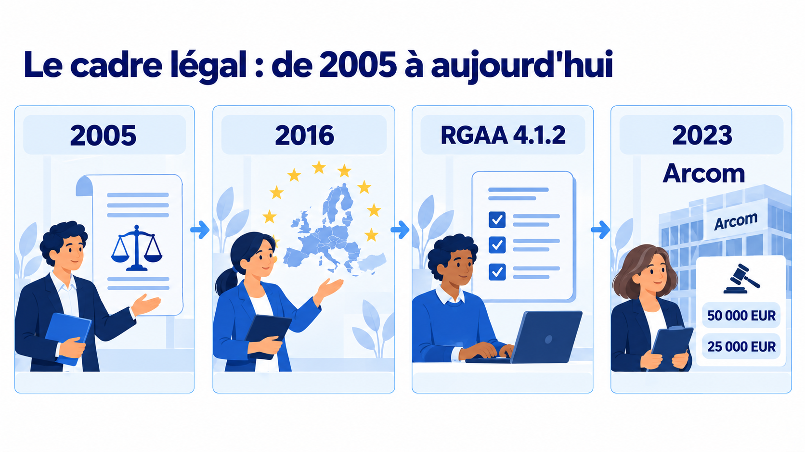
Le cadre légal : de 2005 à aujourd'hui
1. Q3 - Cadre légal | Jalons législatifs
- Loi Handicap 2005 : 1re obligation d'accessibilité
- Directive européenne 2016 : extension au secteur public
- RGAA 4.1.2 (décret 2019-768) : référentiel opposable
- 2023 : l'Arcom devient l'autorité de contrôle
Qui est concerné ?
- État, collectivités, établissements publics
- Entreprises privées gérant un service public ou CA > 250 M EUR
- Jusqu'à 50 000 EUR : accessibilité des organismes publics et assimilés
- Jusqu'à 25 000 EUR : obligations déclaratives
Chronologie en 4 étapes : montrer la progression du droit. Le RGAA 4.1.2 = 106 critères regroupés en 13 thèmes. Depuis 2023, l'Arcom est l'autorité de contrôle de l'article 47. La DINUM édite le RGAA et accompagne les administrations. La sanction peut atteindre 50 000 EUR pour le non-respect de l'obligation d'accessibilité par les organismes publics et assimilés, et 25 000 EUR pour le non-respect des obligations déclaratives.
Slide 23 - Le cadre européen
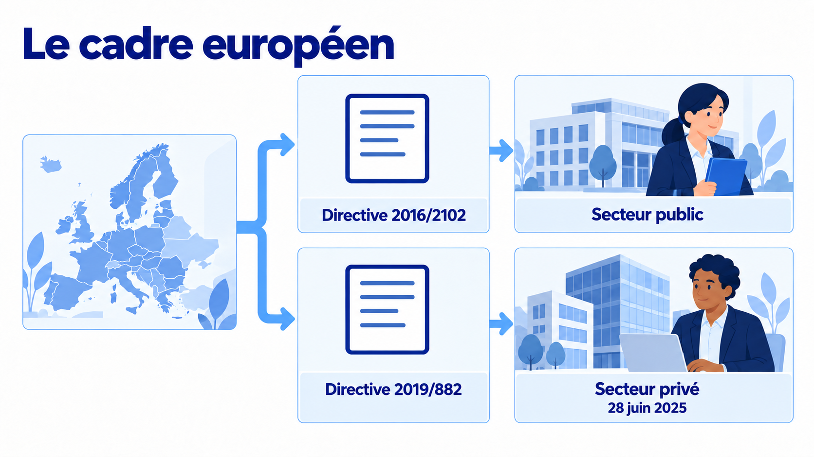
Le cadre européen
1. Q3 - Cadre légal | Directives européennes
Deux directives européennes structurent l'obligation d'accessibilité numérique en France.
Directive 2016/2102 - secteur public
- Sites web et applications mobiles du secteur public
- Transposée en droit français par le décret 2019-768
- Obligation de déclaration d'accessibilité
- Base du RGAA actuel
Directive 2019/882 - secteur privé
- Acte européen d'accessibilité (EAA)
- Applicable à partir du 28 juin 2025
- Commerce en ligne, banque, transport, télécom
- Élargit l'obligation au-delà du secteur public
La directive 2016/2102 est déjà transposée et applicable. L'EAA (2019/882) étend l'obligation au secteur privé depuis juin 2025. Pointer que le mouvement est européen, pas seulement français : les obligations vont continuer à se renforcer.
Slide 24 - RGAA : 13 thèmes, 3 niveaux de conformité
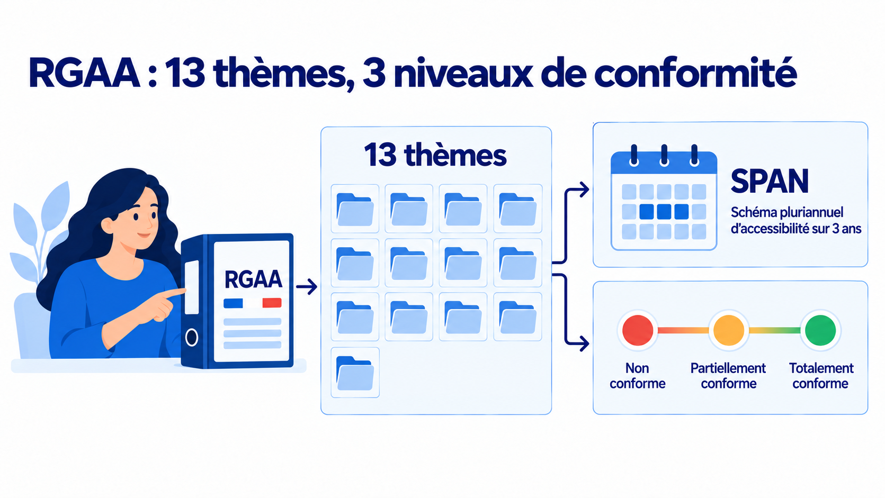
RGAA : 13 thèmes, 3 niveaux de conformité
1. Q3 - Cadre légal | 13 thèmes RGAA
Les 13 thèmes du RGAA
- Images
- Cadres
- Couleurs
- Multimédia
- Tableaux
- Liens
- Scripts
- Éléments obligatoires
- Structuration
- Présentation
- Formulaires
- Navigation
- Consultation
SPAN
Schéma pluriannuel d'accessibilité sur 3 ans
Trois niveaux de conformité
- Non conforme : moins de 50 % des critères
- Partiellement conforme : de 50 % à 99 %
- Totalement conforme : 100 % des critères applicables
Ne pas détailler chaque thème : les participants les retrouveront dans les modules suivants. Insister sur le SPAN : c'est le document stratégique que chaque organisme public doit publier. Environ 25 % des tests RGAA sont automatisables, le reste nécessite un audit humain.
Slide 25 - Le RGAA - Référentiel Général d'Amélioration de l'Accessibilité
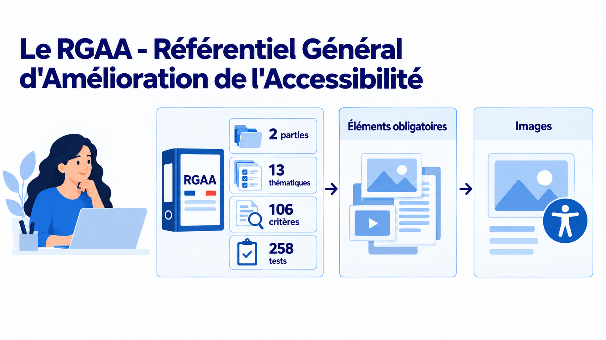
Le RGAA - Référentiel Général d'Amélioration de l'Accessibilité
1. Q3 - Cadre légal | RGAA détail
Structure en 2 parties
- Obligations légales
- Méthode technique
- 13 thématiques
- 106 critères au total
- 258 tests unitaires
Images
- Cadres
- Couleurs
- Multimédia
- Tableaux
- Liens
- Scripts
Éléments obligatoires
- Structuration
- Navigation
- Présentation
- Formulaires
- Consultation
Trois taux de conformité :
- Non conforme : site non audité ou niveau inférieur à 50 %
- Partiellement conforme : de 50 % a 99 %
- Totalement conforme : 100 % des critères validés
Exemptions :
- Fichiers bureautiques publiés avant le 23 septembre 2018
- Contenus intranets/extranets publiés avant le 23 septembre 2019
- Contenus audios/vidéos publiés avant le 23 septembre 2020
- Contenus vidéos, tiers, cartes peuvent aussi être exemptés
Exemples de critères :
- Les images porteuses d'informations doivent avoir un texte alternatif. Les images décoratives ne doivent pas en avoir.
- Les médias avec du son doivent avoir une alternative (sous-titrage, LSF) et les vidéos une audiodescription.
- Plusieurs systèmes de navigation doivent être disponibles (menu, plan du site, recherche). Les éléments-clés sont toujours au même endroit.
Ref : https://accessibilite.numerique.gouv.fr/
Critères : https://accessibilite.numerique.gouv.fr/methode/criteres-et-tests/
Slide 26 - Quelles obligations pour votre structure ?
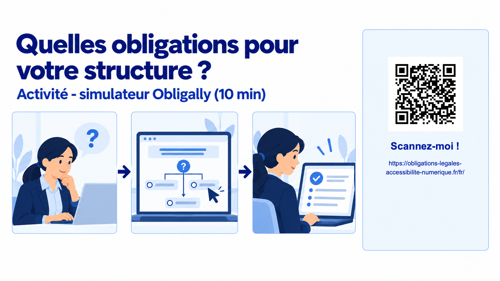
Quelles obligations pour votre structure ?
1. Q3 - Cadre légal | Obligations
Vous connaissez le cadre. Mais concrètement, quelles obligations s'appliquent à votre poste et à votre structure ?
Activité - simulateur Obligally (10 min)
- Cliquez sur Simuler et répondez aux questions
- Notez le résultat : quelles normes s'appliquent à vous ?
Scannez-moi !
Activité individuelle 10 min + débrief collectif 5 min. Faire ressortir : la plupart des structures publiques sont soumises au RGAA ; les communicants produisent des contenus concernés (PDF, vidéos, réseaux sociaux). Fallback si pas de réseau : distribuer le PDF de l'arbre de décision Idéance (dans _source/références/).
Slide 27 - La déclaration d'accessibilité
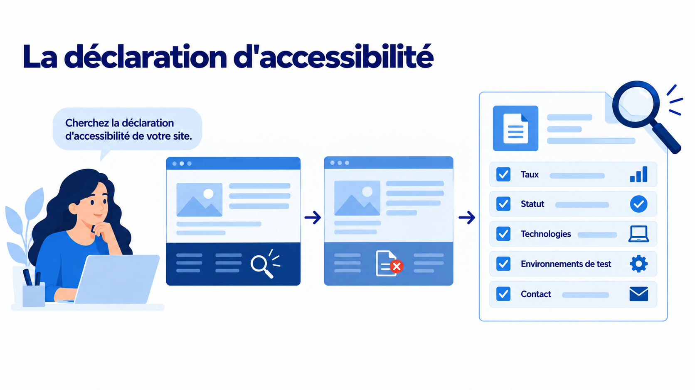
La déclaration d'accessibilité
1. Q3 - Cadre légal | Déclaration
| Que doit-elle contenir ? | Exemple concret |
|---|---|
| Taux de conformité RGAA | Ex. : 62 % conforme |
| Statut global | Partiellement conforme |
| Technologies utilisées | HTML5, CSS3, JavaScript |
| Environnements de test | Chrome + NVDA, Safari + VoiceOver |
| Contact et voie de recours | accessibilite@mon-ministere.gouv.fr |
Exercice pratique
- Cherchez la déclaration d'accessibilité de votre site
- URL type : /déclaration-accessibilité
- Notez le taux de conformité affiché
5 minutes : chaque stagiaire cherche la déclaration de son propre site. Si introuvable : c'est déjà une non-conformité à signaler. La voie de recours = Défenseur des droits si absence de réponse en 2 mois.
Slide 28 - Les obligations légales de mise en accessibilité
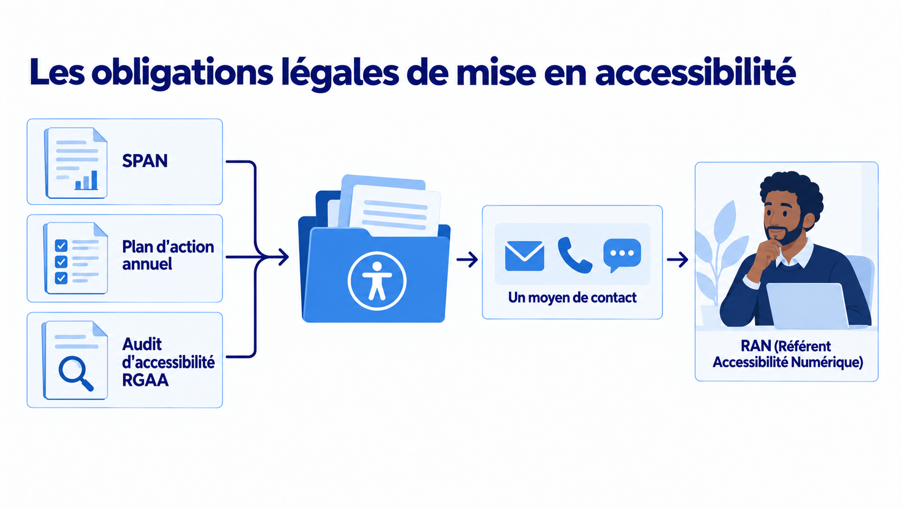
Les obligations légales de mise en accessibilité
1. Q3 - Cadre légal | Récap obligations
Documents obligatoires
- Schéma pluriannuel d'accessibilité numérique (SPAN)
- Plan d'action annuel
- Audit d'accessibilité RGAA en version 4.1.2
- Un moyen de contact
- RAN (Référent Accessibilité Numérique)
| Mention | Signification |
|---|---|
| Accessibilité : non conforme | 49 % et moins, ou aucun audit en cours de validité |
| Accessibilité : partiellement conforme | De 50 % à 99 % des critères respectés |
| Accessibilité : totalement conforme | 100 % des critères applicables validés |
Rappel : environ 25 % des tests RGAA sont automatisables, le reste nécessite un audit humain. Attention : 100 % conforme ne veut pas forcément dire accessible - le RGAA ne couvre pas tous les usages. Le RAN est le référent accessibilité numérique, interlocuteur interne pour piloter la démarche.
Slide 29 - 4. L'accessibilité numérique, pourquoi ?
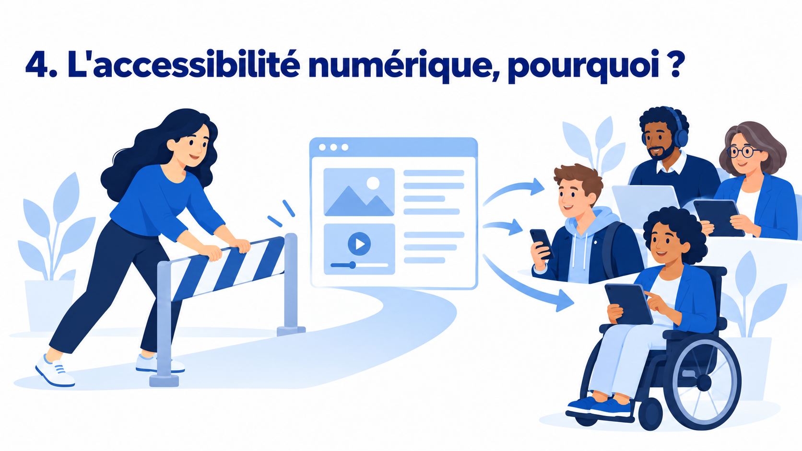
4. L'accessibilité numérique, pourquoi ?
Au-delà du cadre légal, pourquoi s'investir ? Cette section passe du devoir à la conviction : droit fondamental, charte de l'État, bénéfice pour tous.
Slide 30 - Pourquoi agir ?
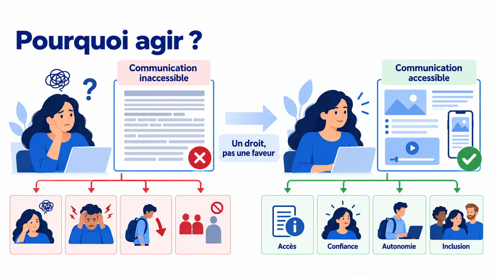
Pourquoi agir ?
1. Q4 - Pourquoi | Droit et charte
Un droit, pas une faveur
- Droit fondamental d'acces a l'information
- Lutte contre la discrimination numérique
- Inclusion dans la vie professionnelle et citoyenne
| Communication inaccessible | Communication accessible |
|---|---|
| Non compréhension | Acces a l'information |
| Frustration, enervement | Confiance en soi |
| Decrochage | Autonomie |
| Exclusion | Inclusion sociale |
Le tableau gagnant-gagnant est tire de la Charte d'accessibilité de la communication de l'État (SIG, mars 2021). Cote gauche : ce que vit la personne face a un contenu inaccessible. Cote droit : ce qu'une communication accessible lui apporte. Pour le communicant, une communication accessible est une communication qui atteint son objectif. Montrer la couverture de la charte : c'est un document officiel du Premier Ministre.
Slide 31 - Communication accessible, de quoi parle-t-on ?
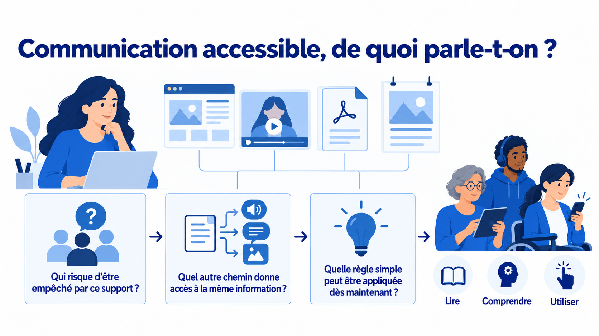
Communication accessible, de quoi parle-t-on ?
1. Q4 - Pourquoi | Communication accessible
Contenus que le public peut lire, comprendre et utiliser.
3 questions à garder en tête
- Qui risque d'être empêché par ce support ?
- Quel autre chemin donne accès à la même information ?
- Quelle règle simple peut être appliquée dès maintenant ?
Les supports concernés
- Web : site, application, newsletter, mails
- Médias : vidéo, podcast, visuel animé
- Documents : PDF, bureautique, formulaires
- Imprimés : affiche, flyer, plan, QR code...
Cette slide sert de cadrage. Le guide source est une introduction utile, pas un référentiel complet ni un substitut à une formation. Faire reformuler par le groupe : accessibiliser une communication, ce n'est pas seulement corriger un site web, c'est penser le support final et l'usage réel.
Slide 32 - 5. L'accessibilité numérique, comment s'y mettre ?
5. L'accessibilité numérique, comment s'y mettre ?
Dernière question du module : passer à l'action. Les slides suivantes donnent les premiers outils concrets avant d'entrer dans les modules pratiques (Word, web, réseaux sociaux).
Slide 33 - Des outils déjà intégrés à vos postes
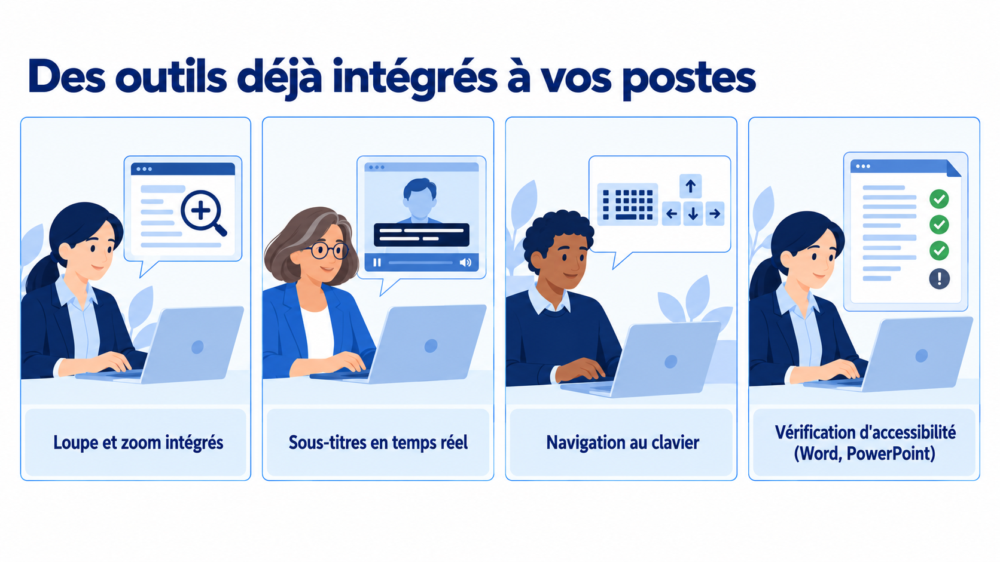
Des outils déjà intégrés à vos postes
1. Q5 - Comment | Outils intégrés
Les systèmes d'exploitation et les suites bureautiques intègrent déjà des fonctions d'accessibilité. Pas besoin de tout réinventer.
Vision
- Loupe et zoom intégrés
- Filtres de couleur et mode sombre
- Narrateur / NVDA (lecteur d'écran)
- Réglage de la taille du texte
Audition et interaction
- Sous-titres en temps réel
- Commandes vocales
- Navigation au clavier
- Vérification d'accessibilité (Word, PowerPoint)
Montrer rapidement où trouver ces réglages : Windows > Paramètres > Accessibilité / macOS > Préférences Système > Accessibilité. Word et PowerPoint proposent un vérificateur d'accessibilité intégré (onglet Révision). On le verra en détail dans le module 2.
Slide 34 - Règles transversales : texte, contraste, QR
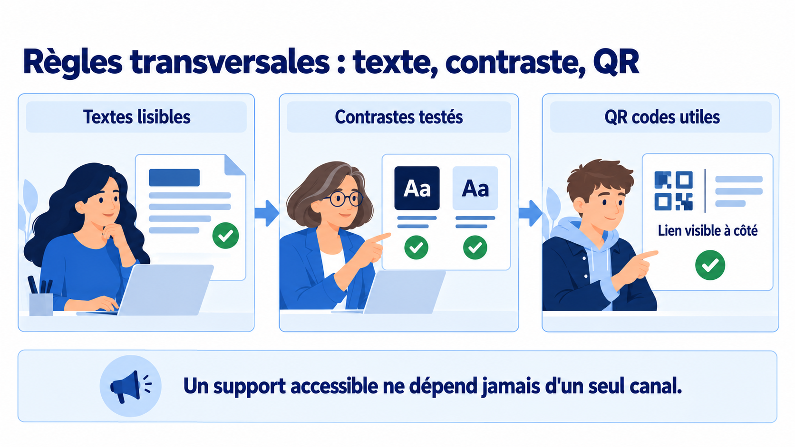
Règles transversales : texte, contraste, QR
1. Q5 - Comment | Règles transversales
1. Textes lisibles
- Police simple, sans empattement
- Alignement à gauche
- Paragraphes courts et aérés
- Taille adaptée au support final
2. Contrastes testés
- Ratio 4,5:1 minimum
- Idéal : viser 7:1
- Éviter les dégradés sous le texte
- Tester avec un outil, pas à l'œil
3. QR codes utiles
- Jamais le seul accès
- Lien visible à côté
- Mention « Scannez-moi ! »
- Taille et contraste suffisants
Un support accessible ne dépend jamais d'un seul canal.
Cette slide annonce les réflexes qui seront travaillés ensuite dans Word, le web et les réseaux sociaux. Ne pas entrer trop tôt dans les détails techniques : elle doit installer un filtre de lecture commun. Pour les QR codes, rappeler la règle demandée : toujours ajouter le lien visible à côté et la mention Scannez-moi !
Slide 35 - FALC et langage clair
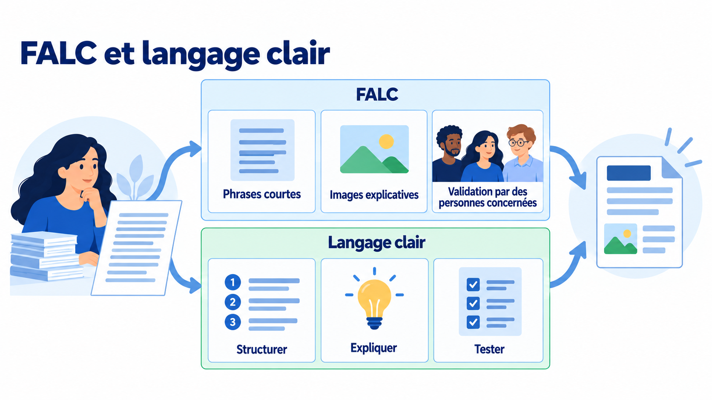
FALC et langage clair
1. Q5 - Comment | FALC et langage clair
Simplifier ne veut pas dire appauvrir : c'est rendre le message accessible au plus grand nombre.
FALC - Facile à lire et à comprendre
- Règles européennes d'accessibilité cognitive
- Phrases courtes, mots simples, une idée par phrase
- Images explicatives, mise en page aérée
- Validation par des personnes concernées
Langage clair
- Structurer : titres, listes, paragraphes courts
- Expliquer : sigles, jargon, termes techniques
- Guider : verbes d'action, consignes explicites
- Tester : relecture à voix haute, lisibilité
Le FALC est un cadre formel européen, le langage clair est une démarche applicable à tout contenu. Les deux se complètent. Ne pas confondre FALC et écriture simplifiée : le FALC suit des règles précises et implique une validation par des lecteurs en situation de handicap cognitif.
Slide 36 - Comment s'y mettre ?
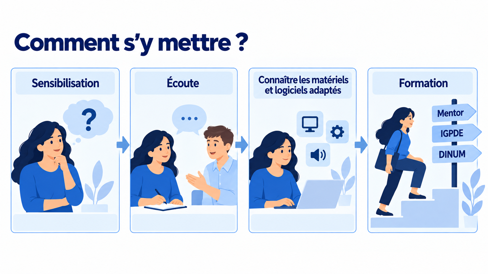
Comment s'y mettre ?
1. Q5 - Comment | Premiers pas
Des règles et bonnes pratiques simples permettent de garantir l'accessibilité à toutes et tous.
4 étapes pour avancer
- Être sensibilisé - c'est ce qu'on fait aujourd'hui
- Être à l'écoute des besoins spécifiques
- Connaître les matériels et logiciels adaptés
- Se former pour découvrir un nouvel univers
Offre de formation
- Mentor (en ligne) : l'accessibilité numérique selon votre métier
- IGPDE : l'accessibilité numérique pour la bureautique et le web (réf. 102846)
- DINUM : sensibilisation, design inclusif, audit RGAA
Rassurer les stagiaires : ils ne partent pas de zéro. La sensibilisation d'aujourd'hui est la première étape. Mentor est un parcours en ligne gratuit. La formation IGPDE 102846 est le prolongement de cette journée. La DINUM propose des formats plus techniques pour ceux qui veulent aller plus loin.
Slide 37 - FALC : la méthode en 5 étapes
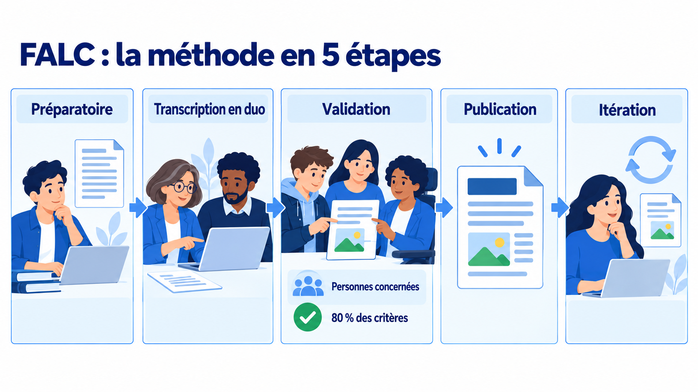
FALC : la méthode en 5 étapes
1. Q5 - Comment | FALC méthode
Il est très difficile de faire simple ! Le FALC suit un processus rigoureux.
Les 5 étapes
- Préparatoire : recherches, résumé simplifié, contrôle des contre-sens
- Transcription en duo : simplification, illustrations, mise en page
- Validation : relecture par des personnes handicapees intellectuelles
- Publication : logo FALC, credit des personnes impliquees
- Itération : savoir dire stop - un texte ne sera jamais compris a 100 %
Conditions obligatoires
- Validation par des personnes concernées (obligatoire)
- 80 % des critères FALC respectes (Unapei)
- Logo europeen FALC + credit des valideurs
Insister sur le fait que le FALC n'est pas juste 'ecrire simple'. C'est un processus formalise avec une validation obligatoire par des personnes concernées. 'Rien pour nous sans nous' est le principe fondamental. Le logo FALC ne peut pas être appose sans cette validation. En pratique, contacter des associations comme l'Unapei ou des ESAT pour trouver des relecteurs. Le guide Unapei 'L'information pour tous' est téléchargeable gratuitement.
Slide 38 - Exemple : le rapport DIA en version accessible et FALC
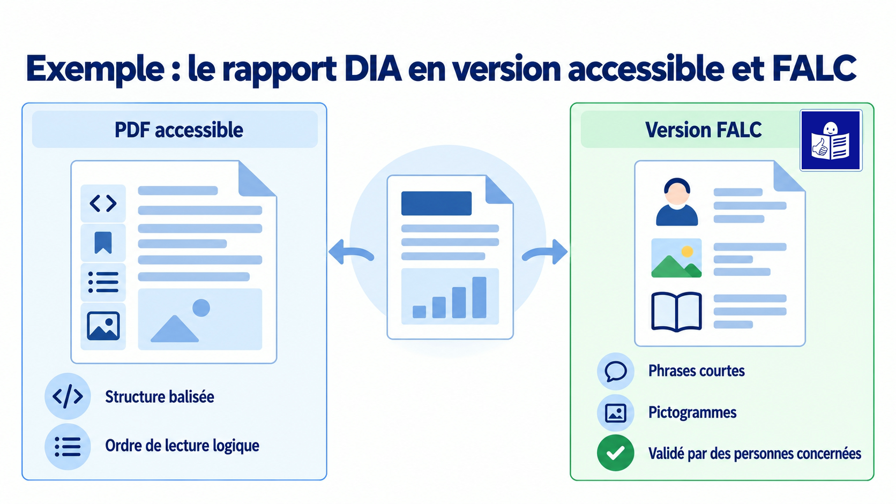
Exemple : le rapport DIA en version accessible et FALC
1. Q5 - Comment | FALC exemple
Le rapport d'activité 2024 de la Délégation interministérielle à l'accessibilité existe en PDF accessible et en version FALC.
PDF accessible
- Structure balisée (titres, listes, tableaux)
- Alt text sur les images, ordre de lecture logique
- Télécharger (handicap.gouv.fr)
Version FALC
- Phrases courtes, vocabulaire simple, pictogrammes
- Validé par des personnes concernées
- Télécharger (handicap.gouv.fr)
Montrer les deux documents si possible. Le rapport de la DIA est un bon exemple car il vient d'une institution publique et montre que le FALC n'est pas reserve aux associations. Le PDF accessible et la version FALC sont complementaires : le premier est le document officiel rendu navigable, le second est une version simplifiee pour un public plus large.
PDF accessible : https://handicap.gouv.fr/sites/handicap/files/2025-03/delegation-interministerielle-accessibilite-rapport-activite-2024.pdf
Slide 39 - L'accessibilité dès la conception
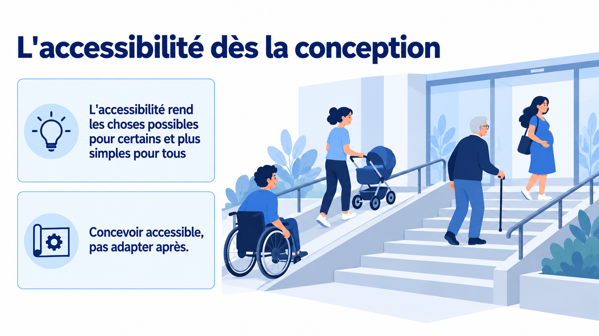
L'accessibilité dès la conception
1. Q5 - Comment | Conception accessible
L'accessibilité rend les choses possibles pour certains et plus simples pour tous.
Concevoir accessible, pas adapter après
- Intégrer l'accessibilité dès le début, pas en rattrapage
- Un document bien structuré profite à tous les lecteurs
- La rampe intégrée est plus élégante que la rampe ajoutée
L'escalier avec rampe intégrée est un exemple emblématique du design universel. Faire le parallèle avec la communication : un document structuré dès le départ (titres, alt text, contraste) est accessible sans effort supplémentaire. Le bandeau #accessibleatous rappelle que les bénéficiaires dépassent largement le public handicapé.